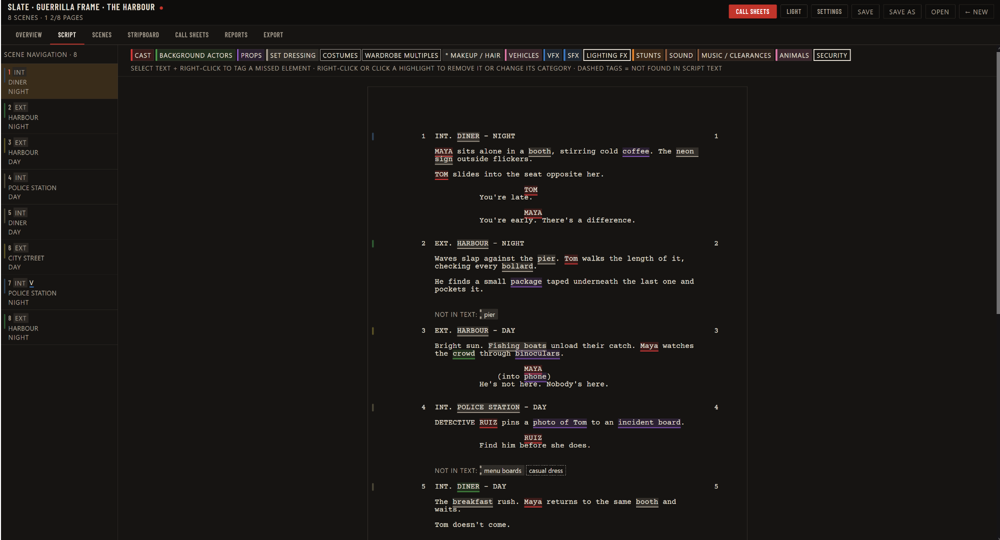

SLATEBLUE REVISION (11/14/26)2.
Everything a 1st AD reaches for
Load a script and Slate does the first pass of the paperwork. You stay in charge of every decision.
3 EXT. HARBOUR – DAY
Bright sun. Fishing boats unload their catch. Maya watches the crowd through binoculars.
MAYA
(into phone)
He’s not here. Nobody’s here.
Sample scene from the demo project “The Harbour”
Tag it the way Slate does. Pick a category, or run the whole pass.
3EXT
DAY
DAY
EXT. HARBOUR – DAY1/8 pg
- Cast 1 Maya
- Background crowd
- Props binoculars, phone
- Set dressing fishing boats
- Script breakdown
- Scenes, cast, extras, props, stunts, vehicles, wardrobe and effects, tagged with the industry-standard breakdown colours.
- Stripboard
- Drag strips between days, add days off, and see page counts in eighths. Start dates roll forward automatically.
- Scheduling assistant
- Type “group the night exteriors” or “add a rest day after day 3”. Preview every change before it’s applied, and undo any step.
- Schedule checks
- Flags overloaded days, night-to-day turnaround risks, cast hold days and unnecessary company moves, with suggested fixes.
- Call sheets
- Cast with actors and status codes, crew calls by department, key contacts, nearest hospital, sunrise and sunset. Print or export one day or all of them as PDF.
- Day Out of Days
- The standard cast grid with SW, W, WF and H codes and totals, ready for budgeting. Export as PDF or CSV.
- Proofreading
- Catches typos before you share the script. Review each fix, and export the corrected screenplay.
- Works with your files
- Imports PDF, Final Draft, Fade In, Fountain, RTF and plain text. Saves projects as files you can back up and reopen.
Straight from the app
These are Slate’s own screens, not mock-ups. Pick one.
